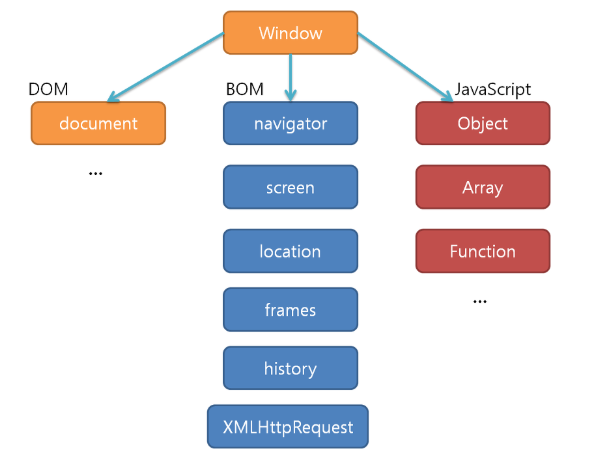
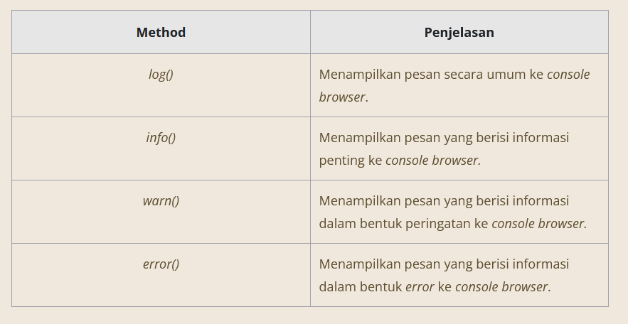
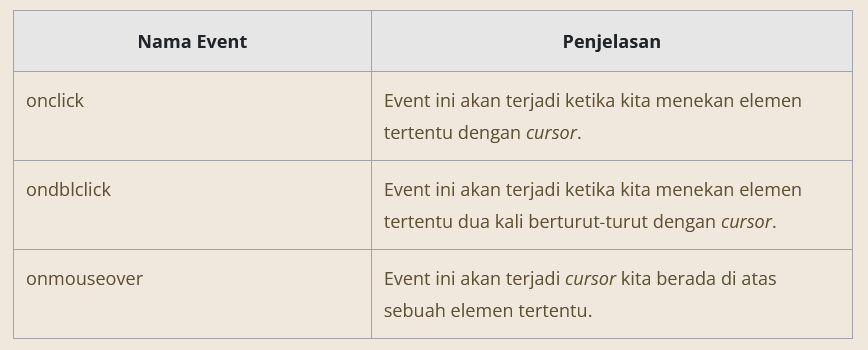

QUEST?
Cara JavaScript Mengontrol Website dan Browser Setelah membaca materi sebelumnya, maka akan muncul pertanyaan “Bagaimana JavaScript mengontrol sebuah website atau browser?” Jawabannya ada dua, dan keduanya akan kita bahas di modul ini, yakni melalui Browser Object Model (BOM) dan Document Object Model (DOM).
Browser Object Model (BOM)
Yang pertama adalah BOM. Dengan BOM, kita dapat memberikan perintah-perintah khusus ke browser, misalnya melalui sebuah ‘atribut’ khusus milik browser yakni ‘window’ (akan kita membahasnya pada materi selanjutnya), sehingga kita bisa membuat browser menampilkan pesan pop-up. Caranya yakni menjalankan method alert() pada console milik browser.
Melalui objek window inilah kode JavaScript kita bisa mengakses berbagai method dan atribut yang bisa membantu kita membuat halaman web menjadi lebih interaktif. Kemungkinan Anda akan tertegun melihat begitu banyak method serta atribut. Akan tetapi, Anda tidak diharapkan untuk menghafal semuanya karena pada materi berikutnya kita cukup membahas 3 method paling dasar yakni alert(), prompt(), dan objek console.
Method Alert()
Method alert() merupakan salah satu method BOM yang menerima satu parameter opsional berupa data string yang akan ditampilkan melalui sebuah pop-up browser contoh : alert('Halo user!');
Method Prompt()
Sebelumnya kita telah mempelajari penggunaan method alert() untuk menampilkan pesan dalam dialog browser. Nah, selain menampilkan pesan, kita juga akan belajar cara mengambil data input dari user melalui dialog browser, yaitu prompt(). Method ini akan menampilkan sebuah dialog browser yang meminta user untuk mengisi kolom inputnya. Karena bisa menangkap input dari user, method ini memiliki lebih banyak fungsionalitas ketimbang alert().
Console()
Akhirnya kita sampai pada pembahasan objek console . Objek ini merupakan peralatan yang wajib diketahui oleh semua Front-End Web Developer. Mengapa demikian? Karena objek console memberikan kita akses ke fitur debugging alias peralatan-peralatan yang bisa membantu menghilangkan bug yang bersembunyi di dalam kode JavaScript. Tentu Anda masih ingat jika kita ingin menampilkan sebuah nilai ke console browser, maka dapat menggunakan method log().
Document Object Model (DOM)
Apa sih DOM itu? Pada lingkungan browser, DOM memberikan izin bagi kode JavaScript untuk mengakses dan memanipulasi konten pada dokumen melalui sebuah Application Programming Interface (API), yakni sesuatu yang memungkinkan JavaScript dan dokumen HTML untuk "berkomunikasi". Masih ingat Browser Object Model yang diwakilkan oleh objek window yang bisa kita masukkan ke kode JavaScript? Nah, DOM diwakilkan oleh global objek bernama document, yang mana dapat dimanfaatkan oleh JavaScript.
DOM Tree
Ketika Anda membaca topik sub-modul ini, kemungkinan akan muncul pertanyaan “Apa hubungannya DOM dengan tree (pohon)?”. Tree yang dimaksud di sini adalah nama dari sebuah struktur data pada komputer yang secara visual mirip seperti sebuah pohon. Struktur data ini disebut tree, karena layaknya pohon terdapat satu batang induk tunggal yang kemudian bercabang menjadi batang-batang lainnya dan bisa saja bercabang kembali. Jika batang tersebut buntu, maka ujungnya terdapat daun (pada struktur data tree, daun disebut sebagai node).

Mencari DOM
Untuk mengakses sebuah elemen HTML melalui DOM, kita gunakan objek yang bernama document. Objek ini berisi semua elemen yang berada pada HTML atau keseluruhan halaman yang terlihat pada jendela browser saat itu. Jika kita coba mengakses nilai dari global obyek document.
Objek document juga memiliki banyak sekali method yang tersedia, berikut beberapa method yang umum digunakan serta fungsinya
| Method | Contoh | Fungsi |
|---|---|---|
| getElementById() | document.getElementById('display'); | Mengembalikan satu elemen yang memiliki nilai id "display". |
| getElementsByName() | document.getElementsByName('button') | Mengembalikan banyak elemen (HTMLCollection) yang memiliki attribute name dengan nilai "button". |
| getElementsByClassName() | document.getElementsByClassName('button') | Mengembalikan banyak elemen (HTMLCollection) yang memiliki attribute class dengan nilai "button". |
| getElementsByTagName() | document.getElementsByTagName('div') | Mengembalikan banyak elemen (HTMLCollection) yang merupakan <div> element. |
| querySelector() | document.querySelector('.button') | Mengembalikan elemen pertama (node) yang menerapkan class "button". |
| querySelectorAll() | document.querySelectorAll('.button') | Mengembalikan banyak Node dalam bentuk NodeList yang menerapkan class "button". |
Membuat Elemen HTML
Manipulasi DOM memberikan kemampuan bagi kita untuk membuat elemen-elemen HTML melalui kode JavaScript. Selain itu, melalui DOM kita mampu membuat konten HTML. Sekarang mari kita mulai dengan membahas method createElement(). Dengan method tersebut, kita bisa membuat sebuah elemen HTML yang benar-benar baru tanpa memanipulasi isi konten berkas HTML. sprt membuat element div, paragraraf, img dll
bagaimana jika kita menambahkan teks? Caranya adalah kita berikan nilai string yang baru dan berikan pada properti innerText . contoh :
const newElement = document.createElement('p');
newElement.innerText = 'Selamat datang ke HTML kosong ini :)'
Untuk memberikan atribut src pada elemen , kita bisa memanggil function setAttribute(). Function ini menerima dua parameter, yaitu nama atribut yang ingin ditambahkan dan nilai yang ingin diberikan dalam artribut tersebut.
EVENTS
Ketika browser selesai menampilkan halaman web, menekan tombol tertentu pada keyboard, atau mungkin meletakkan kursor pada elemen HTML tertentu, itulah yang dinamakan event alias “kejadian”. Hampir apa pun yang berhubungan dengan adanya interaksi dengan berkas HTML bisa kita sebut sebagai event. Lalu, apa fungsinya? Melalui JavaScript, kita bisa menulis kode tertentu yang akan dijalankan ketika merasakan sebuah “kejadian” tertentu. Contohnya jika user menekan sebuah tombol, JavaScript (melalui DOM) akan mengubah tampilan halaman web kita seperti mengubah warna pada elemen tertentu, atau bahkan membawa kita ke bagian tertentu pada halaman web tersebut.
Macam Macam Event
Walau istilah event terkesan sangat abstrak, kita dapat menggolongkan beberapa event menjadi beberapa kategori berdasarkan sumber dari mana event tersebut terjadi. Contohnya kejadian yang berhubungan dengan kursor mouse, keyboard, kegiatan copy sebuah elemen teks pada berkas HTML, atau bahkan dari ukuran window browser. Berikut beberapa pembahasan terhadap kategori umum serta beberapa event-event yang tergolong pada kategori tersebut.
Window Events
Window Events adalah kejadian-kejadian yang berasal dari browser alias pada window.
Form Events
Form Events adalah kejadian-kejadian yang berasal dari sebuah elemen HTML dengan tag form.
Mouse Events
Mouse Events adalah kejadian-kejadian yang berasal dari kegiatan klik mouse.
